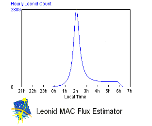
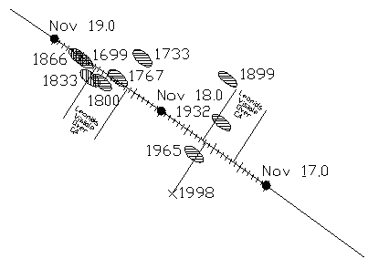

|  |
In 1999, this model predicted the peak location and magnitude of the meteor storm which appeared over Europe. Using data collected over the last few decades and especially in 1999, it was discovered that the dust trail density fits a Lorenzian profile which allows us to project what the rates will be this year. The earth will encounter three of these dust trails this year. The strongest components will be the 1866 and the 1699, which will be seen best over Guam. However, the 1767 dust trail encounter will be visible throughout the continental US. Using the Leonid MAC flux estimator, http://www-space.arc.nasa.gov/~leonid/estimator.html, the expected zenith hourly rate maybe as high as 2,806 Meteors per hour! This is a must see meteor shower.
|  |
The good news is you are all invited to Arizona for another Leonid observing project. Chris Crawford will be running a real time meteor counting system and needs an additional 24 people to help man his system. Your task will be similar to what was done on the plane back in 1999. When you see a Leonid you click a keypad button. You can read about Chris's project here: http://www.erasmatazz.com/Leonids/Introduction.html. Our hope is to provide this data in real time over the web.
The observers will also be on the look out for persistent trains so that other instruments can be put on them to collect data. Unfortunately, funding is limited, so you will have to pay for your air/food/gas which we figure to be about $250 for the weekend (11/15-11/19). Please contact Mike Koop at koopm@best.com if you are interested for more details.
So you can't afford to leave the bay area? Remember that half of our Leonid campaigns have been canceled due to November weather. The further south you travel, the better the weather prospects will be. Of course, we will have a meteor program at Fremont Peak where we have a similar meteor counting system in addition to some video and film cameras. We need at least 8 people to run the counting system down at Fremont Peak. Please contact Mike Koop at koopm@best.com if you are interested for more details. There are other plans for the Leonids throughout the bay area. Check out the AANC Leonid website for more details. http://www.aanc-astronomy.org/